The Hunger Games

In a dystopian future, the oppressive Capitol forces young tributes from its districts to compete in a high-stakes televised battle for survival. As the odds are stacked against them, one tribute’s courage could change everything.
9,269,739 Ratings
Hardcover: $10.70
Paperback: $8.78
Purchase here!
The Ballad of Songbirds and Snakes
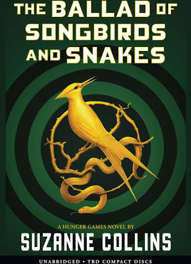
Set decades before The Hunger Games, this riveting prequel follows a young Coriolanus Snow as he navigates ambition, power, and morality in a changing Panem. This is a gripping tale of intrigue, survival, and the origins of a future tyrant.
917,186 Ratings
Hardcover: $16.35
Paperback: $10.48
Purchase here!
Gregor and the Prophecy of Bane
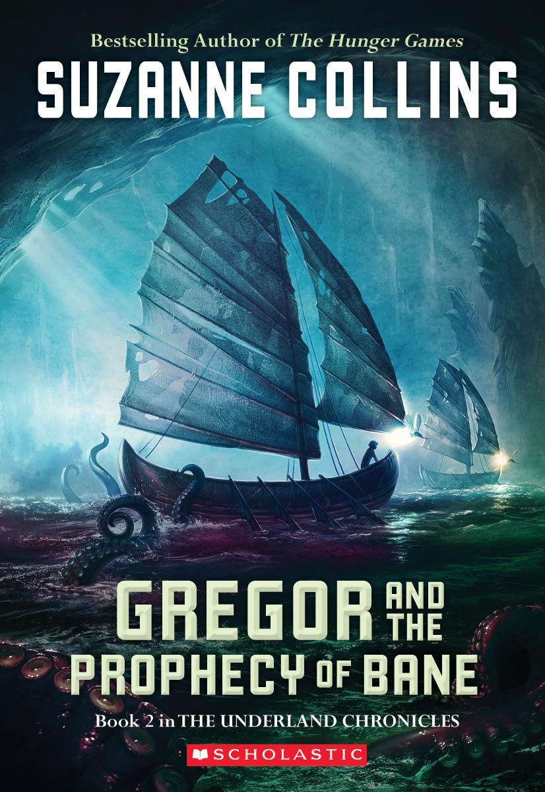
Gregor is once again thrust into the perilous world of the Underland, where a dangerous prophecy threatens to reshape his destiny. This gripping sequel continues the epic tale of fate, bravery, and the battle between good and evil.
49,739 Ratings
Hardcover: $10.99
Paperback: $7.21
Purchase here!
Gregor and the Code of Claw
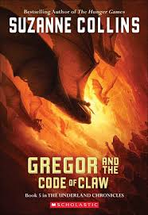
With war looming, Gregor must decipher a mysterious code that holds the key to the realm’s fate. This is an epic conclusion to the series, filled with intense battles, deep friendships, and the ultimate test of destiny.
49,202 ratings
Hardcover: $18.80
Paperback: $9.99
Purchase here!
Catching Fire
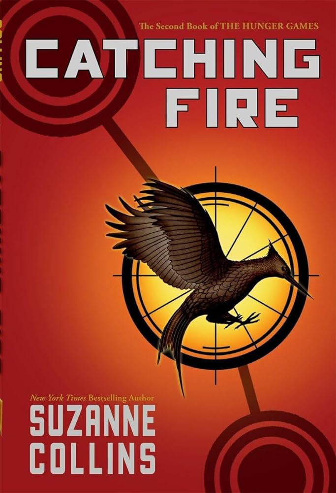
As unrest stirs in Panem, the Capitol tightens its grip, forcing past victors into a new and dangerous challenge. Catching Fire is a thrilling sequel filled with high-stakes action, unexpected alliances, and a fight against oppression.
714,439 ratings
Hardcover: $25.49
Paperback: $8.97
Purchase here!
Sunrise on the Reaping
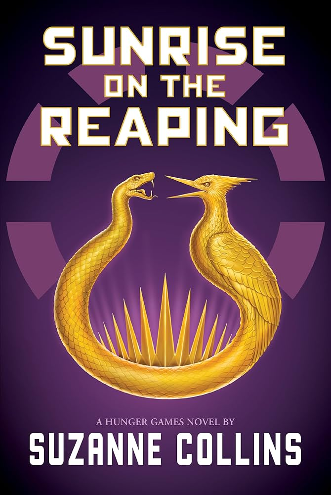
COMING MARCH 18!
Set 24 years before The Hunger Games, Sunrise on the Reaping delves into the 50th annual Hunger Games, where a young Haymitch Abernathy faces unprecedented challenges in a deadly arena. This compelling prequel explores themes of resilience, sacrifice, and the harrowing realities of a dystopian society.
Hardcover: $19.95
Preorder here!
Gregor and the Curse of the Warmbloods
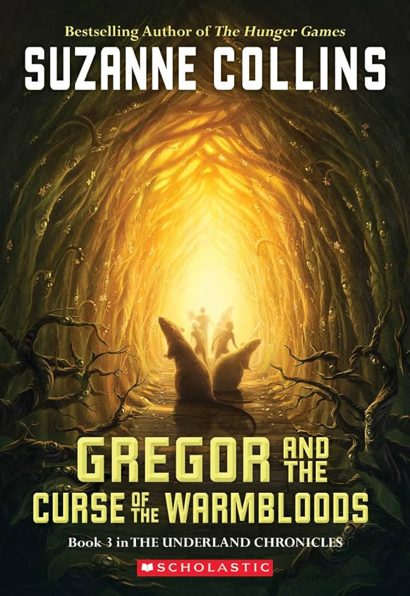
When a deadly plague threatens the Underland, Gregor is drawn into a perilous journey to find a cure before it's too late. This is a heart-pounding adventure filled with danger, discovery, and the weight of impossible choices.
12,917 Ratings
Hardcover: $18.80
Paperback: $7.99
Purchase here!
When Charlie McButton Lost Power
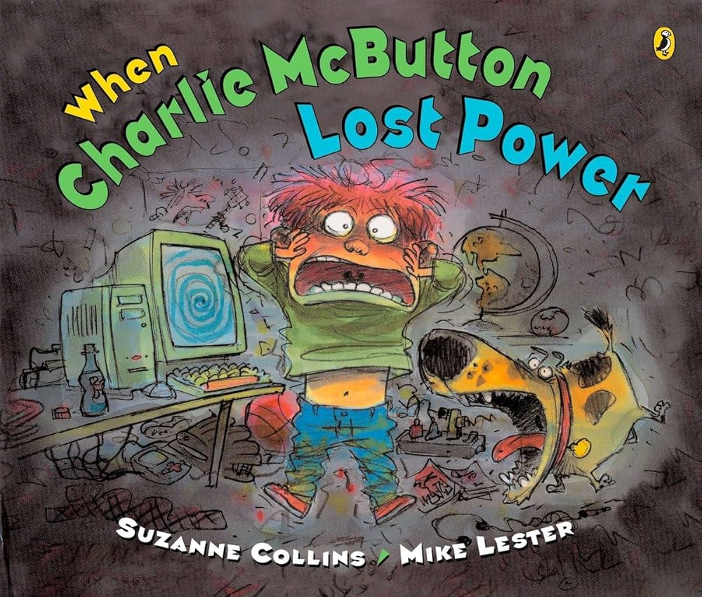
When Charlie McButton loses power to his favorite video games, he finds himself struggling to adapt in a world without technology. When Charlie McButton Lost Power is a humorous and heartwarming story about finding balance and discovering the joys beyond the screen.
2,201 Ratings
Paperback: $6.99
Purchase here!
Mockingjay
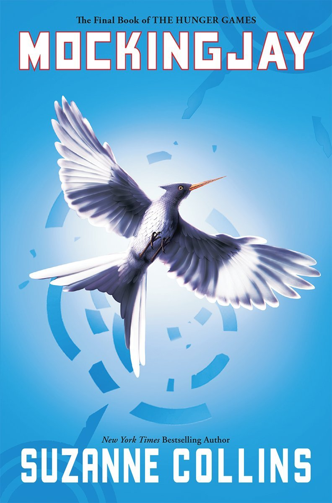
As tensions in Panem reach a breaking point, the fight for freedom becomes more dangerous than ever. Mockingjay is a powerful conclusion to The Hunger Games trilogy, filled with suspense, sacrifice, and the struggle for a better future.
3,440,849 Ratings
Hardcover: $27.28
Paperback: $9.98
Purchase here!
Gregor the Overlander
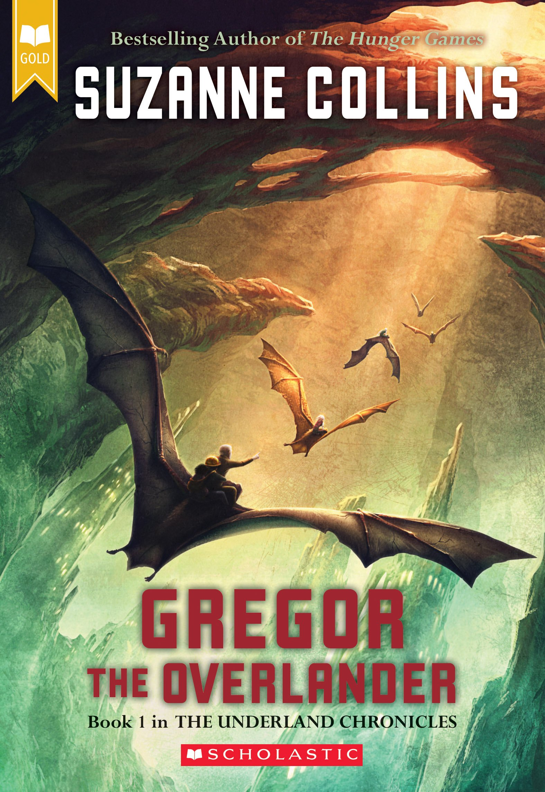
Eleven-year-old Gregor discovers a vast, hidden world beneath New York City. In this strange land, learns of a prophecy that marks him as the key to saving both the Underland and his family. This is an action-packed, heart-stirring adventure filled with courage, fate, and unexpected alliances.
109,483 Ratings
Hardcover: $18.80
Paperback: $6.89
Purchase here!
Gregor and the Marks of Secret
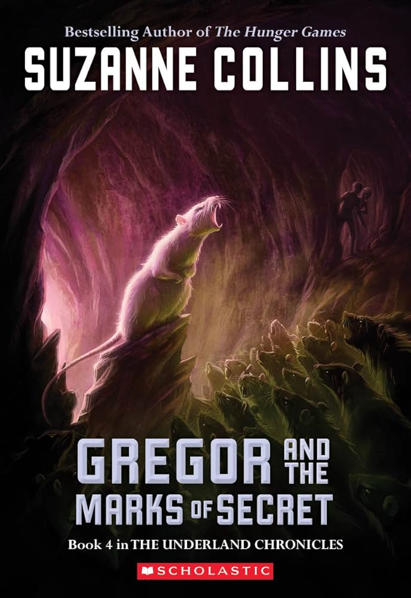
Gregor is drawn deeper into the mysteries of the Underland as he uncovers secrets that could change the fate of both his world and his family. With new allies and enemies, he must confront difficult truths while grappling with the weight of a prophecy that may be beyond his control.
39,549 Ratings
Hardcover: $19.41
Paperback: $6.99
Purchase here!
Year of the Jungle
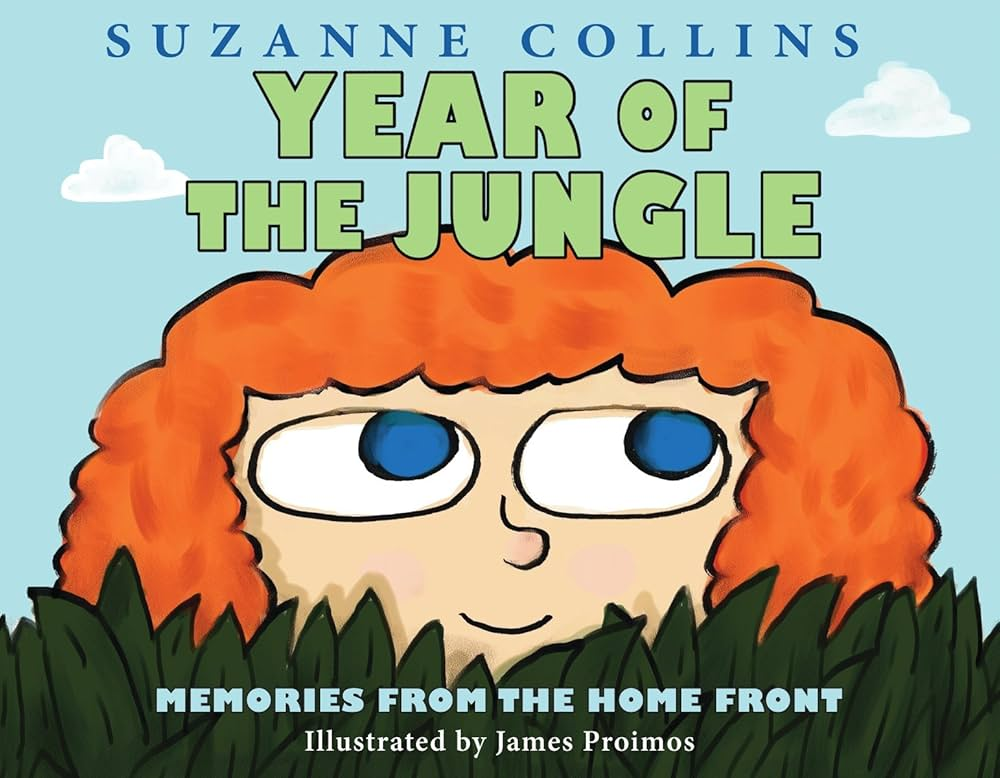
In Year of the Jungle, a young girl learns to navigate the complexities of family and change as her father is deployed to the Vietnam War. This heartfelt story explores the emotional journey of growing up and finding hope amidst uncertainty.
1,010 Ratings
Hardcover: $5.11
Purchase here!